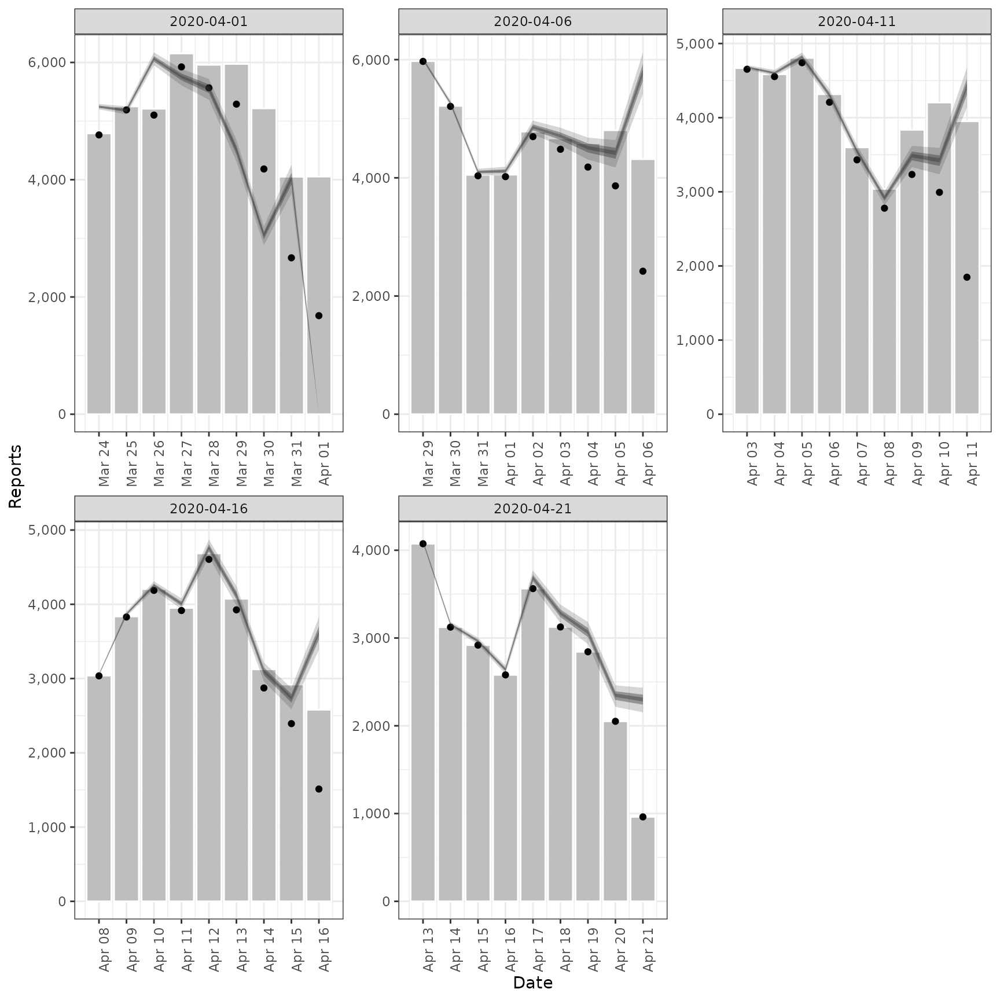
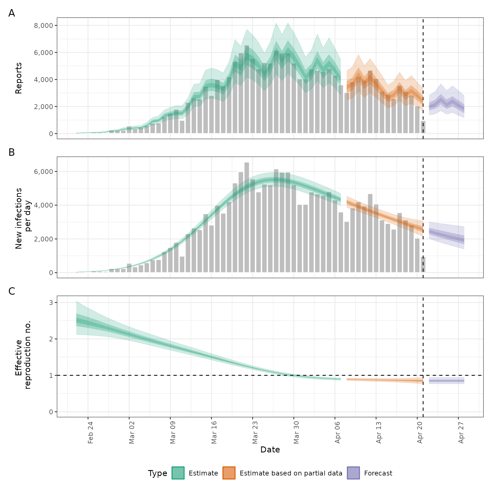

![[Stable]](figures/lifecycle-stable.svg) Estimates a truncation distribution from multiple snapshots of the same
data source over time. This distribution can then be used passed to the
Estimates a truncation distribution from multiple snapshots of the same
data source over time. This distribution can then be used passed to the
truncation argument in regional_epinow(), epinow(), and
estimate_infections() to adjust for truncated data and propagate the
uncertainty associated with data truncation into the estimates.
See here
for an example of using this approach on Covid-19 data in England. The
functionality offered by this function is now available in a more principled
manner in the epinowcast R package.
The model of truncation is as follows:
The truncation distribution is assumed to be discretised log normal wit a mean and standard deviation that is informed by the data.
The data set with the latest observations is adjusted for truncation using the truncation distribution.
Earlier data sets are recreated by applying the truncation distribution to the adjusted latest observations in the time period of the earlier data set. These data sets are then compared to the earlier observations assuming a negative binomial observation model with an additive noise term to deal with zero observations.
This model is then fit using stan with standard normal, or half normal,
prior for the mean, standard deviation, 1 over the square root of the
overdispersion and additive noise term.
This approach assumes that:
Current truncation is related to past truncation.
Truncation is a multiplicative scaling of underlying reported cases.
Truncation is log normally distributed.
Arguments
- data
A list of
<data.frame>s each containing a date variable and a confirm (numeric) variable. Each data set should be a snapshot of the reported data over time. All data sets must contain a complete vector of dates.- truncation
A call to
trunc_opts()defining the truncation of the observed data. Defaults totrunc_opts(), i.e. no truncation. See theestimate_truncation()help file for an approach to estimating this from data where thedistlist element returned byestimate_truncation()is used as thetruncationargument here, thereby propagating the uncertainty in the estimate.- stan
A list of stan options as generated by
stan_opts(). Defaults tostan_opts(). Can be used to overridedata,init, andverbosesettings if desired.- CrIs
Numeric vector of credible intervals to calculate.
- filter_leading_zeros
Logical, defaults to FALSE. Should zeros at the start of the time series be filtered out.
- zero_threshold
Numeric, defaults to Inf. Observations with a primary count less than this threshold are set to zero.
- verbose
Logical, should model fitting progress be returned.
- ...
Additional parameters to pass to
rstan::sampling().
Value
An <estimate_truncation> object containing:
observations: The input data (list of<data.frame>s).args: A list of arguments used for fitting (stan data).fit: The stan fit object.
Examples
# \donttest{
# set number of cores to use
old_opts <- options()
options(mc.cores = ifelse(interactive(), 4, 1))
# fit model to example data
# See [example_truncated] for more details
# iterations and calculation time have been reduced for this example
# for real analyses, use more
est <- estimate_truncation(example_truncated,
verbose = interactive(),
chains = 2, iter = 200
)
# extract the estimated truncation distribution
get_parameters(est)[["truncation"]]
#> - lognormal distribution (max: 10):
#> meanlog:
#> - normal distribution:
#> mean:
#> 0.9
#> sd:
#> 0.005
#> sdlog:
#> - normal distribution:
#> mean:
#> 0.6
#> sd:
#> 0.007
# summarise the truncation distribution parameters
summary(est)
#> Truncation distribution: lognormal (max: 10)
#>
#> Parameter estimates:
#> variable median mean sd lower_90 lower_50 lower_20
#> <char> <num> <num> <num> <num> <num> <num>
#> 1: meanlog 0.9008178 0.9007605 0.005458562 0.8920170 0.8970814 0.8994484
#> 2: sdlog 0.5994500 0.5995709 0.006840967 0.5884631 0.5948740 0.5977749
#> upper_20 upper_50 upper_90
#> <num> <num> <num>
#> 1: 0.9022168 0.9045303 0.9098537
#> 2: 0.6010510 0.6038428 0.6109858
# validation plot of observations vs estimates
plot(est)
#> Ignoring unknown labels:
#> • fill : "Type"

# Pass the truncation distribution to `epinow()`.
# Note, we're using the last snapshot as the observed data as it contains
# all the previous snapshots. Also, we're using the default options for
# illustrative purposes only.
out <- epinow(
generation_time = generation_time_opts(example_generation_time),
example_truncated[[5]],
truncation = trunc_opts(get_parameters(est)[["truncation"]])
)
#> Logging threshold set at INFO for the name logger
#> Writing EpiNow2 logs to the console and:
#> /tmp/RtmpR6VQvJ/regional-epinow/2020-04-21.log.
#> Logging threshold set at INFO for the name logger
#> Writing EpiNow2.epinow logs to the console and:
#> /tmp/RtmpR6VQvJ/epinow/2020-04-21.log.
#> WARN [2026-02-19 18:59:57] epinow: There were 1 divergent transitions after warmup. See
#> https://mc-stan.org/misc/warnings.html#divergent-transitions-after-warmup
#> to find out why this is a problem and how to eliminate them. -
#> WARN [2026-02-19 18:59:57] epinow: Examine the pairs() plot to diagnose sampling problems
#> -
plot(out)

options(old_opts)
# }